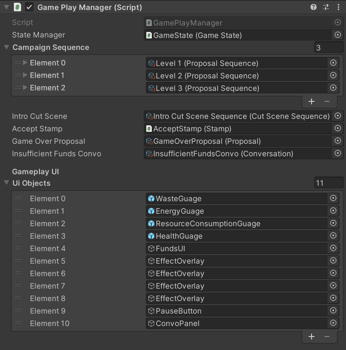

The Game Play Manager
The Game Play Manager is the central component of the game that is responsible for the gameplay. It tracks the gameplay loop and controls other components in order to keep the loop running. See the article on Main Components and Interactions for more information.
The Game Play Manager follows a singleton pattern, meaning that only one instance should exist at any point in the game.

State Manager- the GameState that represents the gameworldCampaign Sequence- a list of Proposal Sequences that represents the game campaignIntro Cut Scene- the CutSceneSequence that is played before the campaign startsAccept Stamp- the stamp that is used to approve proposals. The GamePlayManager disable the stamp if there is insufficient funds for the proposalGame Over Proposal- the Proposal scriptable object (which is not an actual in-game proposal) that is loaded if the player hits a game-over conditionInsufficient Funds Convo- the conversation that is played if the player is unable to accept a proposal because their funds are insufficientUI Objects- a list of gameObjects that are only shown when gameplay is running. They are hidden when the game has not started and when the game is paused.